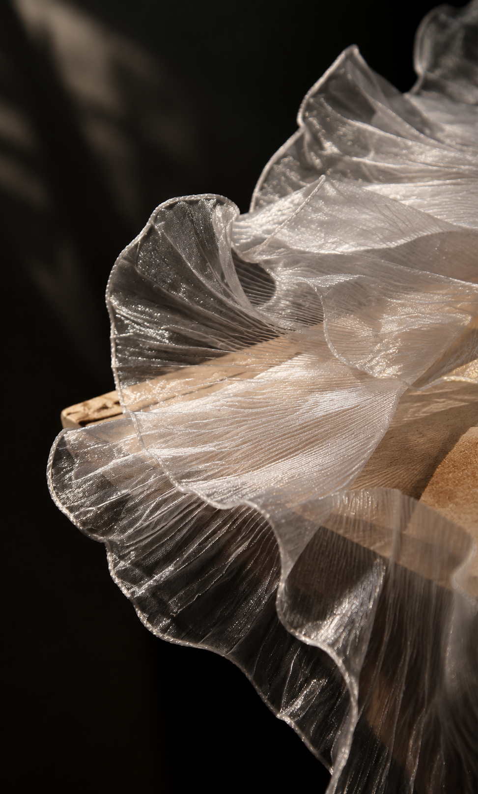
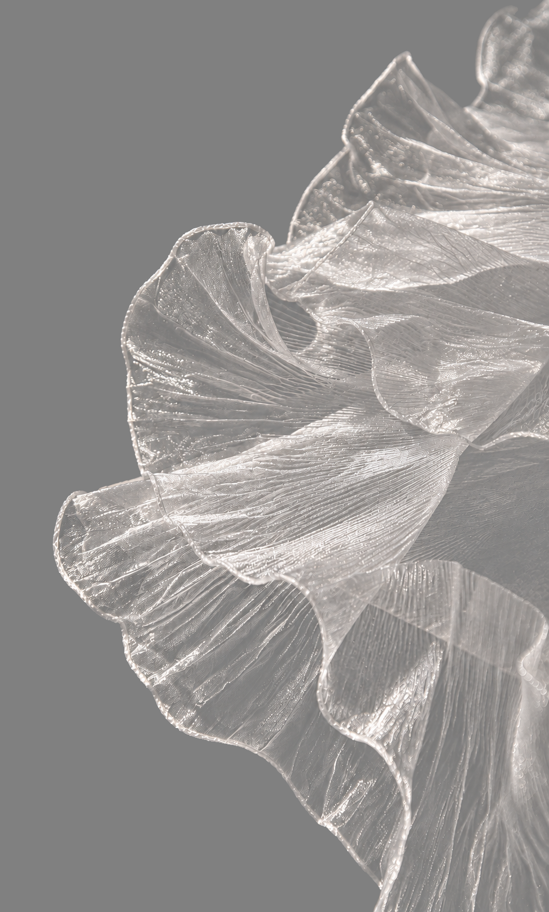
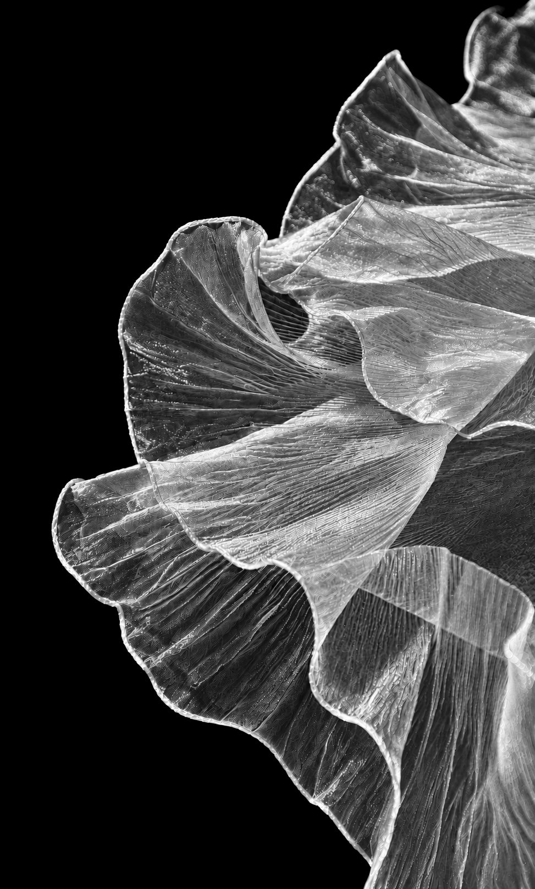
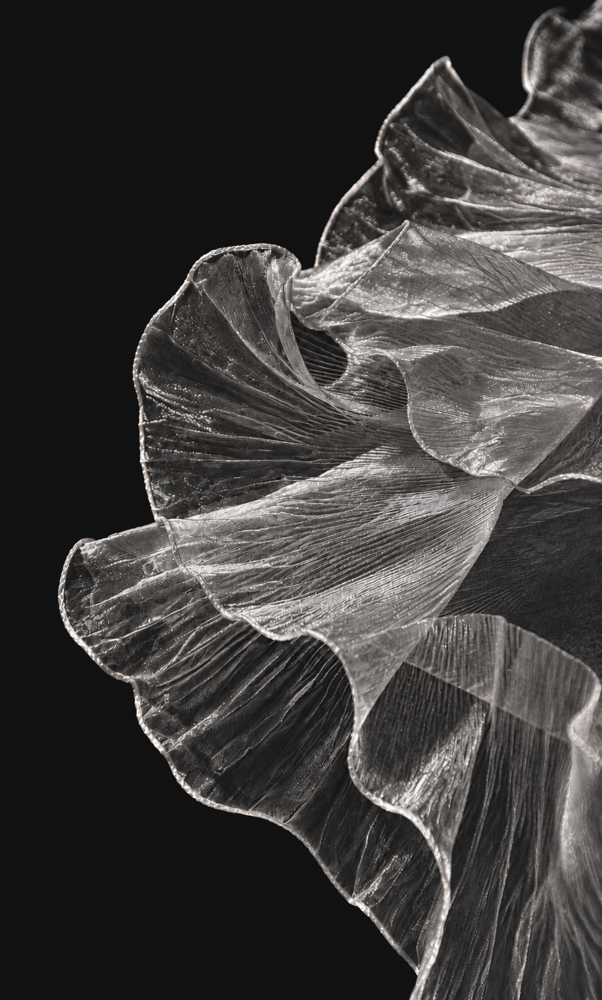
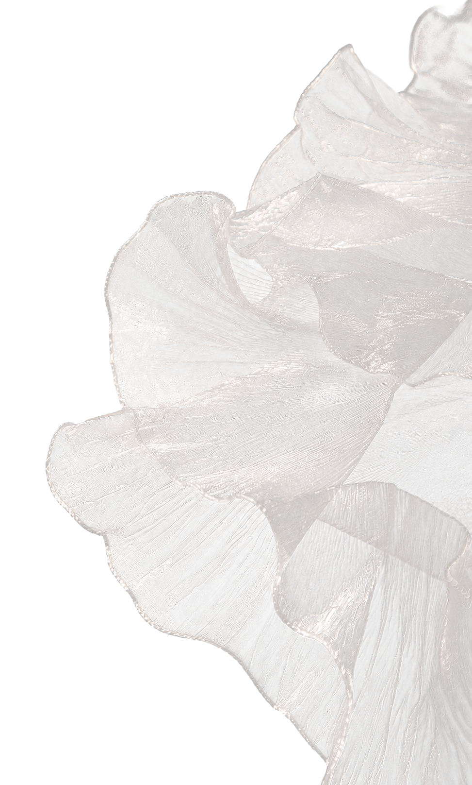

从一张原图，
到保留半透明材质的 PNG。
以「珍珠白纱物」走完准备、生成、验收与导出六步，再对照人物案例理解发丝与不透明主体的区别。
这是可操作的分步教程，不是录屏。示例来自已经完成的网页流程，下方嵌入的是真实离线工具。无需重新生图，就能用现成配对素材试做后半程。
输入前提：网页需要先准备单色背景彩色图和配对灰度遮罩，不会直接识别复杂原图中的物体或自动生成遮罩。下面的生图步骤负责准备素材，网页步骤只负责后续合成。生成中的重绘与错误不能靠合成工具无损修复。
01 / 准备什么要留下，什么要去掉？
本例只保留纱物，去掉木台与背景，也去掉透过纱看到的木纹。保持 973 × 1616 画布和原有裁切。人物案例则保留人物、头发、衣物、项链与包。



{kind=link}
{kind=link}
{kind=link}
若浏览器只打开图片，请使用“图片另存为”。跟做网页部分可直接保存后两张，跳到第 5 步；第 4 步是制作新配对图时必须做的检查。
- 准备自己的 ChatGPT 账号及可用生图额度；此阶段会上传图片到 ChatGPT，先确认可上传。
- 新建会话上传一张原图，逐张串行处理；下一张再开新会话。
- 为每张图建独立目录，区分生成原件与验收后成品，避免混用。
source.png 原图 solid-raw.png 下载的灰底原件 alpha-raw.png 下载的遮罩原件 alpha.png 单通道遮罩 alignment-overlay.png 轮廓检查图 solid.png 验收后纯色图 cutout.png 网页导出的透明图
先生成灰底彩色图
上传 source.png，发送下面的提示词。生成后下载实际图片为 solid-raw.png，不要用聊天截图代替。换图时修改主体范围和尺寸。
推荐底色 #808080（RGB 128,128,128）：中性中灰兼顾浅色纱线与深色细节的观察，通道相等且便于记录为已知底色。它不是色键删除，也不是所有材质的最优色；生成、脚本与网页设置必须保持一致。了解底色选择与限制。
检查残余木台、褶皱、位置与裁切，有明显变化先纠正灰底。看起来均匀，不代表背景像素已经精确为 #808080。
重新上传灰底图，再生成遮罩
在同一会话重新上传刚下载的 solid-raw.png，作为唯一几何参考。不要回到原图独立生成遮罩，也不要让两种结果拼在一张图里。
下载为 alpha-raw.png。黑 = 透明，白 = 不透明，灰 = 半透明。“保持一致”是提示目标，不是生成模型的能力保证。
换成人物时，要求怎么改？
灰底提示词改为保留人物、头发、衣服、饰品和包，去掉街道与其他人；本例人物尺寸 1145×1374。遮罩要求皮肤、衣物、项链、包和浓密头发主体为白色，仅外围散发、实际孔洞或真实透光材料保留灰度。不能因为衣服有阴影或头发颜色深，就把它们画灰或画黑。
本次人物第一版遮罩出现项链、衣袖和发块漏底，纠正后采用第二版。查看人物案例。
同尺寸，不等于同位置
用未按遮罩裁边的 solid-raw.png检查。以下命令在仓库根目录执行，需 Python 3.10+ 与 Pillow；把原图和两张生成原件放进 work 文件夹。
python3 -m pip install -r requirements.txt python3 skills/gpt-image-2-subject-assets/scripts/process_assets.py source-info --source-image work/source.png python3 skills/gpt-image-2-subject-assets/scripts/process_assets.py normalize-mask --source-image work/source.png --mask-image work/alpha-raw.png --mask-out work/alpha.png --black-threshold 8 --white-threshold 255 python3 skills/gpt-image-2-subject-assets/scripts/process_assets.py alignment-overlay --source-image work/source.png --solid-image work/solid-raw.png --mask-image work/alpha.png --overlay-out work/alignment-overlay.png
先确认原件构图一致。归一化脚本可能缩放遮罩到源图尺寸，但不能修复局部变形。8/255 是本次纱物的设置，可能损失弱细丝，不是通用最佳值。
- 看叠加图，或在下方工具导入 raw 灰底与 alpha.png，选择“查看 → 红线轮廓”，勾选“原尺寸”。
- 沿四周、尖角、内部孔洞检查；人物还要看发梢、衣袖和包。红线只是阈值边界，不能代替半透明质量检查。
- 错位只重做遮罩。同一问题纠正一次仍失败，保留记录并停止标记为完成；不要通过裁边掩盖错位。
轮廓通过后，才将零 Alpha 区域统一为精确底色：
python3 skills/gpt-image-2-subject-assets/scripts/process_assets.py finalize-solid --source-image work/source.png --solid-image work/solid-raw.png --mask-image work/alpha.png --background '#808080' --solid-out work/solid.png python3 skills/gpt-image-2-subject-assets/scripts/process_assets.py validate --source-image work/source.png --solid-image work/solid.png --mask-image work/alpha.png --background '#808080'
纯色化不修正纱内部的底色误差，格式检查不能证明真实透明度。不会运行脚本时，可把原件和本仓库 Skill 交给支持本地脚本的代理执行；网页本身不会导出 L 模式遮罩或精确纯色图。演示成品已完成上述处理，无需重复。
导入两张配对图，检查再调节
- “灰底彩色图”选择 solid.png；“黑白遮罩图”选择 alpha.png，不是 source.png。
- 选择“通用 · 保留原遮罩”，背景颜色选“指定纯色（推荐）”，设为 #808080，不是原图黑底。
- 不勾选“允许缩放遮罩”。尺寸不同时先检查是否拿错配对。
- 加载两张后自动生成，也可点击“生成”。本例状态应为“已生成 973×1616，背景 #808080”。
- “查看”选“透明结果”，依次点“黑”“白”“格”。工具的黑底实际为 #111111。
| 控件 | 本例参数 | 调整注意 |
|---|---|---|
| 黑场裁切 | 0.000 | 升高会去掉弱透明度，也可能删掉细丝。 |
| 白场压实 | 1.000 | 降低会把更多浅灰变为不透明。 |
| 灰底反推 | 0.90 | 减轻混色，过强可能放大遮罩或底色误差。 |
| 灰边清理 | 0.00 | 可能削弱 Alpha，不能修复位移。 |
| 白纱中和 | 0.00 | 会改变颜色；金发和彩色材质不应盲目套用。 |
| 全透明像素置黑 | 勾选 | 清理透明处 RGB，不会给图片加黑底。 |
每次只改一个参数，并切换背景对照。两组新增案例都用通用预设，没有套用白纱经验修正。下面是真实工具，可直接选文件、操作并下载；不自动上传图片。嵌入页受限时，单独打开工具。
保存透明 PNG，而不是预览截图
点击“下载 PNG”，允许本次下载，保存为 cutout.png。即使正在看红线或遮罩，下载仍是透明结果；预览背景不会写入透明 PNG。


{kind=link}
交付前检查清单
勾选仅用于跟做，不代表自动检测，刷新后不保留。示例没有真实 Alpha 标注，生成过程可能重绘，不能保证无损恢复。两组 Safari 导出的 Alpha 与遮罩最大差为 2/255，详见案例说明。
遇到问题，应该回到哪一步？
- 残留木纹或主体变形：回到灰底生成，不靠网页滑杆去掉物体。
- 遮罩错位：以同一灰底重做，不裁掉彩色图掩盖问题。
- 衣服、身体漏底：纠正遮罩语义，不要把所有灰度无差别压白。
- 额度、登录或验证阻止继续：保留原件，正常处理后从未完成阶段继续，不并发或反复请求绕过限制。